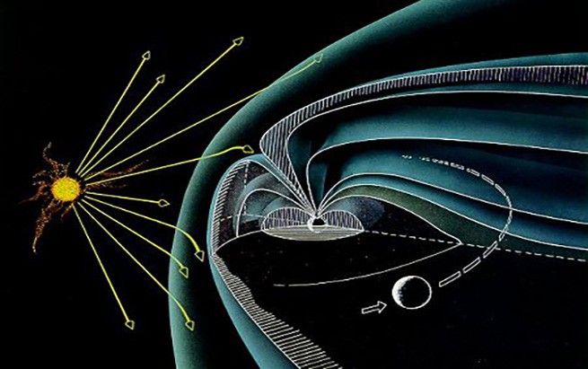
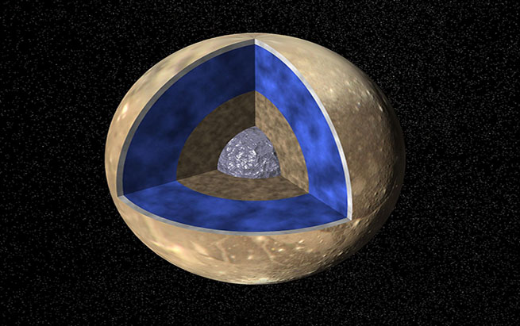

|  |
The Earth is surrounded by a huge magnetic field. This is very important because this field helps to protect our world from the solar wind. As you know, the sun sends out light. However, it also sends out small particles of matter called ions. These ions flow outward from the sun through the solar system. This is the solar wind.
|
|  |
If the ions in the solar wind hit the Earth, it would cause a great deal of damage. It would not have been possible for life to develop here the way it has. There are other worlds in our solar system that have magnetic fields. However, not every world has one. To have a magnetic field, a world must have a molten metal core or a salty ocean, and it must rotate fast enough to make the core magnetic.
|